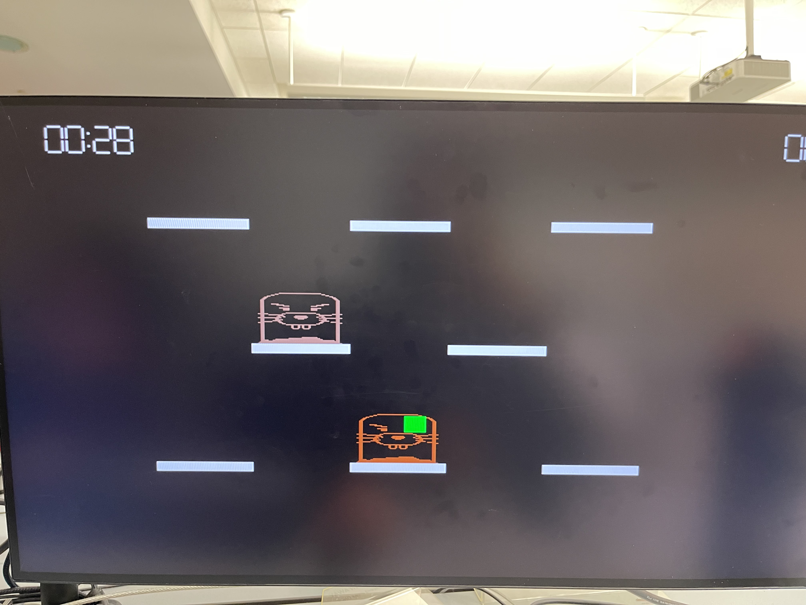

Whack-a-Mole
Game Development on FPGA
FPGA Engineer & Project Manager
Whack-a-Mole on FPGA is a game development project on FPGA firmware development with Verilog HDL, integrating a timer and external tools such as graphic on VGA, keyboard involvement and mouse for players to select their playing method. All of these were implemented based on Digital Logic Design concepts in FPGA.
This project is a part of Logic Design class.
Team Members: Rawisara Chairat, Arnav Pratap Chaudhry, Vansh Bhati
My responsibilities

Graphic Display on VGA
Sample of Testing